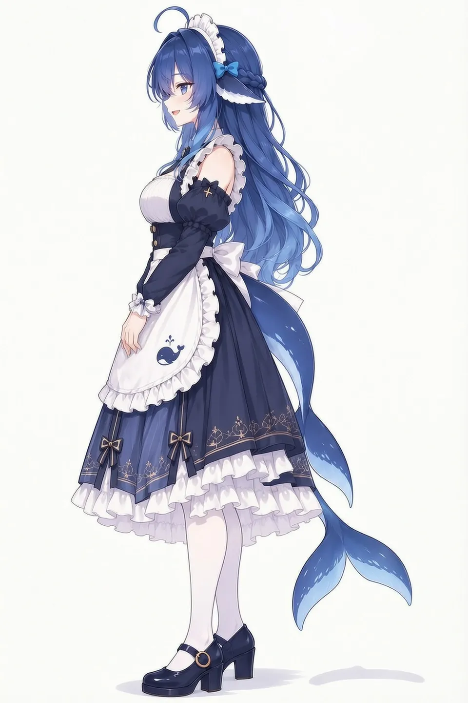

一、角色设定图（三视图 · 细节拆解）2 张
最常用于保持角色一致性的“锚点图”。两张分别对应 Q 版与成熟比例，原站同页均附完整生成 Prompt。


二、萌娘百科收录图（条目官方归档）6 张
萌娘百科「DeepSeek娘」条目正文收录的代表性图像，含作者署名。


三、换装三视图参考（7 套）7 张
不同服装变体的三视图设定集，可直接用作垫图 / img2img / ControlNet Reference。


四、社区二创13 张
来自鲸鱼娘开源资产库 126 张社区画廊中的代表性投稿，作者署名见每张卡片与 ATTRIBUTION.md。





五、壁纸3 张
DeepSeek Harness 社区皮肤的动态壁纸静帧。